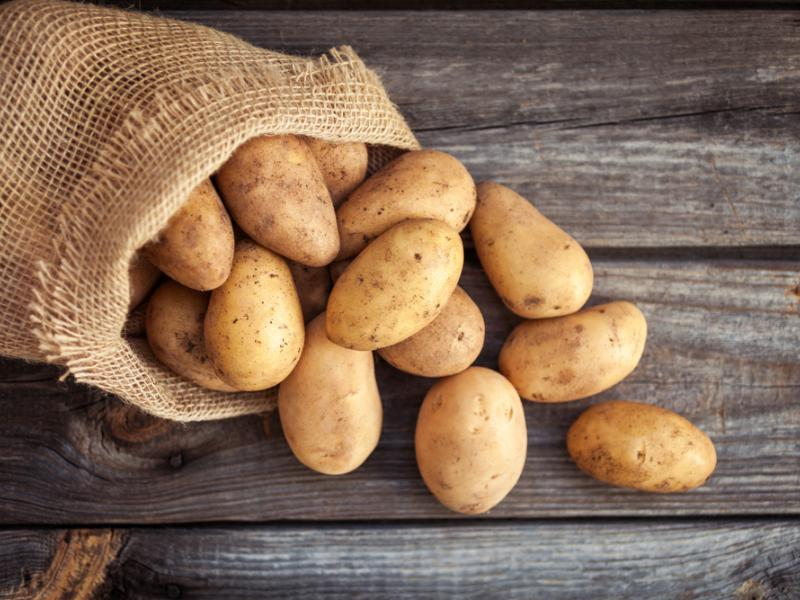

Pływanie jest popularnym sportem i aktywnością rekreacyjną, która przynosi liczne korzyści zdrowotne i przyjemność. Jest to forma ruchu, w której człowiek porusza się w wodzie, wykorzystując różne techniki i style, takie jak kraul, żaba, grzbietowy czy delfin.
Pływanie jest doskonałym sposobem na poprawę kondycji fizycznej. Regularne treningi pływackie wzmacniają mięśnie, zwiększają wydolność serca i płuc, a także poprawiają elastyczność stawów. Jest to idealna forma aktywności dla osób w każdym wieku, w tym dla dzieci, dorosłych i osób starszych. Pływanie ma także wiele korzyści zdrowotnych. Pomaga w kontrolowaniu wagi ciała, ponieważ spala wiele kalorii.
Ponadto, jest łagodne dla stawów, co czyni je odpowiednim sportem dla osób z problemami z układem kostno-stawowym. Poprawia również równowagę i koordynację ruchową. Pływanie może być również formą terapii fizycznej. Jest stosowane w celu rehabilitacji po urazach, operacjach czy do łagodzenia bólu mięśniowego. Woda działa jak naturalny podpórnik, zmniejszając nacisk na ciało.
Jednak pływanie to nie tylko korzyści fizyczne, ale także relaksacyjne. Pobyt w wodzie może pomóc w redukcji stresu, poprawić nastrój i zrelaksować umysł. Jest to również doskonały sposób na odprężenie się i oderwanie od codziennych trosk. Pływanie może być uprawiane na różnych poziomach zaawansowania, od prostych pływackich kółek do rywalizacji na zawodach. Dla niektórych ludzi to pasja i sposób na zdobywanie medali, dla innych to sposób na utrzymanie zdrowego trybu życia.
Ogólnie rzecz biorąc, pływanie jest wszechstronnym sportem i formą aktywności fizycznej, która przynosi liczne korzyści zdrowotne i emocjonalne. Jest to doskonała opcja zarówno dla tych, którzy chcą poprawić swoją kondycję fizyczną, jak i dla tych, którzy szukają sposobu na relaks i odstresowanie się. Warto dodać pływanie do swojej rutyny, aby cieszyć się wszystkimi jego zaletami.
Pływanie to także sport, który rozwija wiele ważnych umiejętności. Poprawia koordynację ruchową, umiejętność oddychania, a także rozwija siłę mięśniową i wytrzymałość. Dzięki temu może być świetnym uzupełnieniem treningu innych dyscyplin sportowych. Na przykład, pływanie może pomóc biegaczom w utrzymaniu dobrej kondycji podczas okresu rekonwalescencji lub na treningach krzyżowych.
Pływanie jest również aktywnością społeczną. Baseny i kąpieliska są miejscami spotkań rodzin, przyjaciół i społeczności. Dzieci uczą się pływać w towarzystwie rówieśników, a dorośli mogą korzystać z czasu spędzonego na basenie jako sposobu na nawiązywanie nowych znajomości. Warto również podkreślić, że pływanie jest dostępne przez większą część roku, niezależnie od warunków pogodowych. Baseny kryte pozwalają na kontynuowanie treningów nawet w okresie zimowym.
Podsumowując, pływanie to nie tylko forma aktywności fizycznej, ale również pasja, terapia i sposobność do spędzania czasu z rodziną i przyjaciółmi. To sport, który kształtuje ciało i umysł, dając wiele korzyści dla zdrowia i dobrej kondycji. Bez względu na cel - od poprawy zdrowia po rywalizację na zawodach - pływanie jest doskonałą opcją dla każdego.
